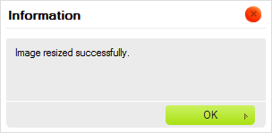
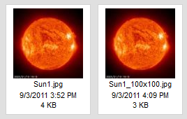
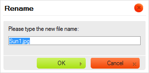

Panel soubor轡 zobrazuje v禳echny soubory dostupn矇 ve vybran矇 slo鱉ce.
Panel soubor轡 m轡鱉e soubory zobrazovat ve dvou r轡zn羸ch form獺tech zobrazen穩, v z獺vislosti na nastaven穩 CKFinder (viz "Nastaven穩"). N獺sleduj穩c穩 je porovn獺n穩 zobrazen穩 N獺hled a Seznam ve stejn矇 slo鱉ce.
P?i nastaven穩 CKFinder pro pou鱉it穩 zobrazen穩 N獺hled (Thumbnails) budou soubory zobrazeny jako n獺hledy (miniatury nebo ikony), s nebo bez dal禳穩ch informac穩 jako n獺zev souboru, velikost, nebo datum (z獺le鱉穩 na Va禳穩ch nastaven穩ch).

Kdy鱉 nastav穩te CKFinder aby pou鱉il zobrazen穩 Seznam (List), soubory budou zobrazeny v seznamu, s nebo bez dal禳穩ch informac穩 jako n獺zev souboru, velikost, nebo datum (z獺le鱉穩 na Va禳穩ch nastaven穩ch).

Abyste soubor aktivovali a ud?lali z n?j "sou?asn羸 soubor" v CKFinder, klikn?te na n獺zev souboru nebo na jeho n獺hled. Aby bylo snaz禳穩 soubor vybrat, p?i najet穩 my禳穩 nad soubor bude jeho pozad穩 zv羸razn?no. Jakmile je soubor vybr獺n bude trvale zv羸razn?n jinou barvou pozad穩.
Obr獺zky n穩鱉e zobrazuj穩 r轡zn矇 stavy souboru, jak je zobrazen ve slo鱉ce: nevybr獺n, najet穩 my禳穩 a aktivov獺n (vybr獺n).
 |
 |
 |
Abyste soubor deaktivovali, klikn?te na jin羸 (?穩m鱉 ho aktivujete) nebo klikn?te na jak矇koliv pr獺zdn矇 m穩sto uvnit? Panelu soubor轡.
Abyste zkop穩rovali soubor do jin矇 slo鱉ky, vyberte ho a p?et獺hn?te na c穩lovou slo鱉ku v Panelu slo鱉ek. Kdy鱉 ho p?esunete na n獺zev slo鱉ky, zvolte mo鱉nost Soubor zkop穩rovat sem (Copy File Here) z kontextov矇ho menu.

Soubor bude duplikov獺n a jeho kopie bude um穩st?na do c穩lov矇 slo鱉ky. Zdrojov獺 slo鱉ka z轡stane nedot?ena.

Pozn獺mka: Pokud soubor se stejn羸m n獺zvem ji鱉 v c穩lov矇 slo鱉ce existuje, bude V獺m nab穩dnut v羸b?r mezi p?episem nebo automatick羸m p?ejmenov獺n穩m zkop穩rovan矇ho souboru (toto je v羸choz穩 mo鱉nost).

Abyste soubor p?esunuli do jin矇 slo鱉ky, zvolte ho a p?et獺hn?te do c穩lov矇 slo鱉ky v Panelu slo鱉ek. Kdy鱉 ho p?et獺hnete na n獺zev slo鱉ky, zvolte mo鱉nost Soubor p?esunout sem (Move File Here) z kontextov矇ho menu.

Soubor bude ze zdrojov矇 slo鱉ky odstran?n a vlo鱉en do c穩lov矇.

Pokro?il矇 operace mohou b羸t provedeny na soubor pou鱉it穩m jeho Kontextov矇ho menu. V z獺vislosti na okolnostech mohou b羸t dostupn矇 n獺sleduj穩c穩 mo鱉nosti:

Pozn獺mka: N?kter矇 mo鱉nosti kontextov矇ho menu mohou b羸t zak獺z獺ny (a proto jsou za禳edl矇), v z獺vislosti na nastaven穩ch CKFinder, kter矇 vy鱉aduje V獺禳 spr獺vce syst矇mu.
Abyste vybrali soubor pomoc穩 kontextov矇ho menu, zvolte mo鱉nost Vybrat (Select). Jinak m轡鱉ete toto tak矇 prov矇st dvojit羸m kliknut穩m na soubor pomoc穩 Va禳穩 my禳i.
V z獺vislosti na prost?ed穩, kde je CKFinder pou鱉it, operace v羸b?ru m轡鱉e, nap?穩klad, poslat URL souboru do jin矇 aplikace nebo vlo鱉it obr獺zek p?穩mo do ?l獺nku vytvo?en矇m ve Va禳em redak?n穩m syst矇mu.
Abyste si mohli soubor prohl矇dnout v prohl穩鱉e?i, zvolte mo鱉nost Zobrazit (View) z jeho kontextov矇ho menu. Ne v禳echny druhy soubor轡 mohou b羸t v prohl穩鱉e?穩ch zobrazeny, ale tato funkce je u鱉ite?n獺 pro obr獺zky, text a soubory PDF. V ostatn穩ch p?穩padech se V獺s prohl穩鱉e? zept獺 na vhodnou aplikaci, pomoc穩 kter矇 soubor otev?穩t.
V z獺vislosti na nastaven穩 Va禳eho prohl穩鱉e?e a opera?n穩ho syst矇mu, bude soubor zobrazen v nov矇 kart? nebo okn? prohl穩鱉e?e.
Abyste mohli soubor st獺hnout, zvolte mo鱉nost Ulo鱉it jako (Download) z jeho kontextov矇ho menu. Prohl穩鱉e? se V獺s zept獺 na um穩st?n穩 sta鱉en矇ho souboru ve Va禳em po?穩ta?i. V z獺vislosti na nastaven穩 Va禳eho prohl穩鱉e?e a opera?n穩ho syst矇mu m轡鱉e b羸t soubor tak矇 otev?en hned po sta鱉en穩 pomoc穩 vhodn矇 aplikace ve Va禳em opera?n穩m syst矇mu.
Abyste zm?nili velikost obr獺zku nebo jeho n獺hledu, zvolte mo鱉nost Zm?nit velikost (Resize) z jeho kontextov矇ho menu. Jakmile zad獺te nov矇 rozm?ry obr獺zku nebo zvol穩te velikost n獺hledu, zav?ete dialogov矇 okno k pou鱉it穩 zm?n.

Pokud je obr獺zek p?穩li禳 velk羸, m轡鱉ete zm?nit jeho rozm?ry zad獺n穩m nov羸ch hodnot do pol穩
?穩?ka (Width) a V羸禳ka (Height). Standardn? je pom?r obr獺zku uzam?en,
co鱉 m轡鱉ete vid?t d穩ky tla?穩tku  (Uzamknout pom?r). To znamen獺, 鱉e kdy鱉 zm?n穩te jednu z hodnot velikosti (禳穩?ku
?i v羸禳ku), druh獺 bude automaticky upravena.
(Uzamknout pom?r). To znamen獺, 鱉e kdy鱉 zm?n穩te jednu z hodnot velikosti (禳穩?ku
?i v羸禳ku), druh獺 bude automaticky upravena.
Pokud chcete voln? upravit oba rozm?ry, klikn?te na tla?穩tko Uzamknout pom?r, abyste
pom?r odemknuli. Tla?穩tko se zm?n穩 na
 (Odem?eno) a 繳prava jednoho rozm?ru nezp轡sob穩 automatickou
zm?nu druh矇ho. Pro znovu uzam?en穩 pom?ru, klikn?te je禳t? jednou na tla?穩tko Odem?en穩.
(Odem?eno) a 繳prava jednoho rozm?ru nezp轡sob穩 automatickou
zm?nu druh矇ho. Pro znovu uzam?en穩 pom?ru, klikn?te je禳t? jednou na tla?穩tko Odem?en穩.
Obr獺zek m轡鱉ete snadno vr獺tit do p轡vodn穩ho rozm?ru stisknut穩m tla?穩tka
 (P轡vodn穩 velikost). Toto resetuje velikost obr獺zku; p轡vodn穩 禳穩?ka a v羸禳ka
budou nyn穩 zobrazeny v odpov穩daj穩c穩ch r獺me?c穩ch.
(P轡vodn穩 velikost). Toto resetuje velikost obr獺zku; p轡vodn穩 禳穩?ka a v羸禳ka
budou nyn穩 zobrazeny v odpov穩daj穩c穩ch r獺me?c穩ch.
Pokud zm?n穩te velikost obr獺zku, m轡鱉ete se rozhodnout ho ulo鱉it pod stejn羸m n獺zvem, ?穩m鱉 existuj穩c穩 p?ep穩禳ete. Nezapome?te pros穩m, 鱉e tuto operaci nelze vr獺tit a jakmile soubor s jeho zm?n?nou velikost穩 ulo鱉穩te, j穩鱉 ho nebudete moci vr獺tit do p轡vodn穩 velikosti. Abyste p轡vodn穩 obr獺zek p?epsali, nechte za禳krtnut矇 pol穩?ko Vytvo?it nov羸 obr獺zek (Create new image).

M轡鱉ete se tak矇 rozhodnout obr獺zek ulo鱉it jako nov羸 soubor a zanechat p轡vodn穩 tak jak je. Pokud
vyberete pol穩?ko Vytvo?it nov羸 obr獺zek (Create new image), budete moci d獺t zm?n?n矇mu souboru
nov羸 n獺zev. Standardn? V獺m CKFinder nab穩dne obr獺zek ulo鱉it pod n獺zvem, odvozen羸m od p轡vodn穩ho souboru
a rozm?ry nov矇ho souboru (nap?穩klad: Sun1_100x100.jpg kdy鱉 p轡vodn穩 soubor m?l n獺zev
Sun1.jpg a velikost souboru byla zm?n?na na 100 pixel轡 na 禳穩?ku i v羸禳ku).

Kdy鱉 jste s Va禳imi zm?nami spokojeni, klikn?te na tla?穩tko OK pro zav?en穩 dialogov矇ho okna. Po 繳sp?禳n矇 zm?n? velikosti bude zobrazena potvrzovac穩 zpr獺va.

Pokud jste zm?n?n羸 obr獺zek ulo鱉ili do nov矇ho souboru, uvid穩te oba soubory uvnit? slo鱉ky.

Pozn獺mka: Velikost p轡vodn穩ho souboru m轡鱉e omezit dostupn矇 mo鱉nosti pro funkci Zm?nit velikost. Velikost zm?n?n矇ho obr獺zku nem轡鱉e p?ekro?it p轡vodn穩 rozm?ry.
Funkce Zm?nit velikost (Resize) m轡鱉e b羸t tak矇 pou鱉ita pro vytv獺?en穩 kop穩 obr獺zku se zm?n?nou velkost穩 (n獺hled轡), kter矇 m轡鱉ete pou鱉穩t v ?l獺nc穩ch Na Va禳穩 internetov矇 str獺nce nebo v p?穩sp?vc穩ch do blogu. D穩ky funkci pro vytv獺?en穩 n獺hled轡 m轡鱉e spr獺vce str獺nky nastavit mo鱉nosti p?edur?en矇 velikosti n獺hledu, kter獺 m轡鱉e b羸t pou鱉ita u鱉ivateli CKFinder. Toto V獺m u禳et?穩 ?as ru?n穩m zad獺v獺n穩m zm?n?n羸ch hodnot 禳穩?ky a v羸禳ky pro ka鱉d羸 obr獺zek a t穩mto bude ka鱉d獺 velkost n獺hledu na Va禳ich str獺nk獺ch stejn獺.
Abyste mohli pou鱉穩t jednu z p?ednastaven羸ch velikost穩 n獺hledu, zvolte mo鱉nost Zm?nit velikost (Resize)
z kontextov矇ho menu. V ?獺sti Vytvo?it nov羸 n獺hled (Create a new thumbnail) dialogov矇ho okna Zm?nit velikost (Resize)
vyberte za禳krt獺vac穩 pol穩?ka odpov穩daj穩c穩 po鱉adovan矇 velikosti. Po 繳sp?禳n矇 zm?n? velikosti bude zobrazena potvrzovac穩 zpr獺va.
Kopie obr獺zku se zm?n?nou velikost穩 budou vytvo?eny ve stejn矇 slo鱉ce a nov矇 soubory budou pojmenov獺ny
podle mo鱉nosti nastaven穩 velikost n獺hledu, kterou zvol穩te (s p?穩ponami _large,
_medium a _small, kter矇 budou p?id獺ny k p轡vodn穩mu n獺zvu souboru).

Pozn獺mka: Pokud je obr獺zek men禳穩, ne鱉 n?kter獺 z mo鱉nost穩 n獺hled轡 (viz p?穩klad naho?e), ty, kter矇 jsou nedostupn矇, budou za禳edl矇.
Abyste p?ejmenovali soubor, zvolte mo鱉nost P?ejmenovat (Rename) z jeho kontextov矇ho menu nebo pou鱉ijte kl獺vesovou zkratku F2. Do dialogov矇ho okna, kter矇 se zobraz穩, zadejte nov羸 n獺zev souboru, ?穩m鱉 p?ep穩禳ete existuj穩c穩. Jakmile zad獺te nov羸 n獺zev souboru a zav?ete dialogov矇 okno, soubor bude p?ejmenov獺n.

Ne v禳echny znaky mohou b羸t pou鱉ity v n獺zvech slo鱉ek a soubor轡 kv轡li omezen穩m
syst矇m轡, kde je CKFinder spu禳t?n. Mezi znaky, kter矇 nemohou b羸t pou鱉ity v n獺zvech
slo鱉ek a soubor轡 jsou: \ / : *
? " < > a |.
Upozorn?n穩: Kdy鱉 slo鱉ku p?ejmenujete, odkazy ?i vlo鱉en穩 m矇di穩 dostupn矇 na jin羸ch str獺nk獺ch a odkazuj穩c穩 na soubor budou po禳kozeny a proto nebudou dostupn矇. Z tohoto d轡vodu bu?te p?i pou鱉穩v獺n穩 t矇to funkce opatrn穩.
Abyste soubor smazali, zvolte mo鱉nost Smazat (Delete) z jeho kontextov矇ho menu nebo pou鱉ijte kl獺vesu Del. Bude zobrazena potvrzovac穩 zpr獺va, kter獺 zajist穩, 鱉e tuto operaci opravdu chcete prov矇st. Jakmile smaz獺n穩 potvrd穩te, soubor bude odstran?n.
Upozorn?n穩: Tuto operaci nelze vr獺tit zp?t. Jakmile slo鱉ku a jej穩 obsah sma鱉ete, odstran?n矇 soubory ji鱉 nelze obnovit.

Upozorn?n穩: Kdy鱉 soubor sma鱉ete, odkazy ?i vlo鱉en穩 m矇di穩 dostupn矇 na jin羸ch str獺nk獺ch a odkazuj穩c穩 na soubor budou po禳kozeny a proto nebudou dostupn矇. Z tohoto d轡vodu bu?te p?i pou鱉穩v獺n穩 t矇to funkce opatrn穩.